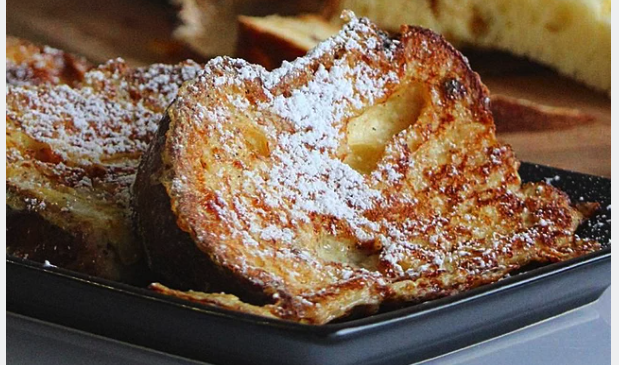

Christmas festivities left us with a ton of panettone and in need of some new ways to eat it. My grandpa requested French toast, so here is a new holiday twist on a delicious breakfast classic. Feel free to cut your panettone smaller before cooking if it is hard to manipulate. Serve warm with maple syrup, whipped cream, or any other topping.
Prep: 5 mins Cook: 10 mins Total: 15 mins Servings: 1 Yield: 1 slice
